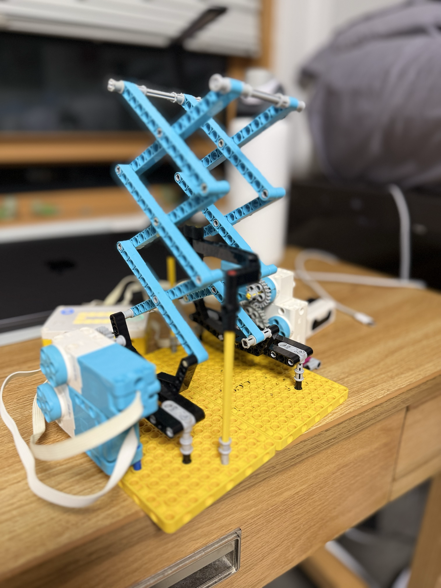

For the haunted house, we built a scissor lift inside a bucket to launch a skull (or any object up to around 35g) into the air. We attached a distance sensor to the side of the bucket, so anyone reaching over would ideally activate the scissor lift, causing the skull to launch unexpectedly. Unfortunately, the lift was very gimmicky since, when the position of the gear shifted a little due to the sudden motion, it wouldn't run smoothly.